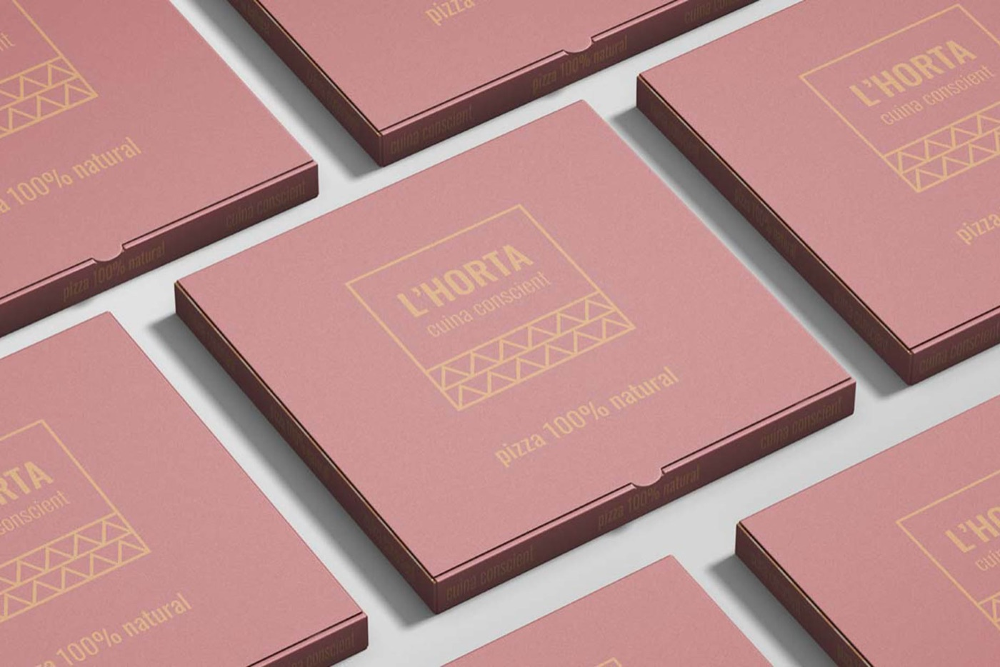

Inicio / La cartaEl gusto de
L’HORTA · CUINA CONSCIENT
El gusto de
elegir bien.
Sabores conocidos, ingredientes con personalidad y una mesa para compartirlos.

ELIGE A TU RITMO
Las pizzas.
Clásicas que vuelven a la mesa.
Elige tu próxima favorita.
No encontramos pizzas con esa búsqueda. Prueba con otro ingrediente.
Selección de la carta publicada en febrero de 2025.
Consulta precios, disponibilidad y alérgenos con el restaurante.
A TU MANERA
La base
también cuenta.
La carta de referencia incluye masa tradicional e integral y opciones de mozzarella vegana o sin lactosa. Consulta suplementos y disponibilidad al pedir.
La masa sin gluten se elabora en un horno compartido y la carta advierte de trazas. Si tienes alguna alergia o intolerancia, consulta con el equipo antes de elegir.